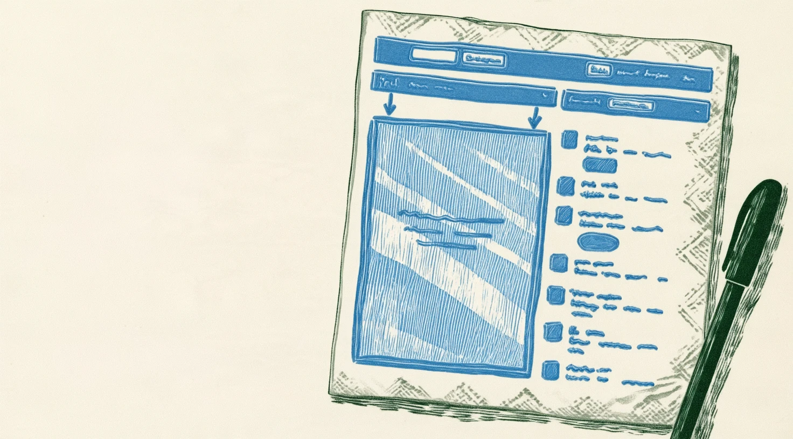
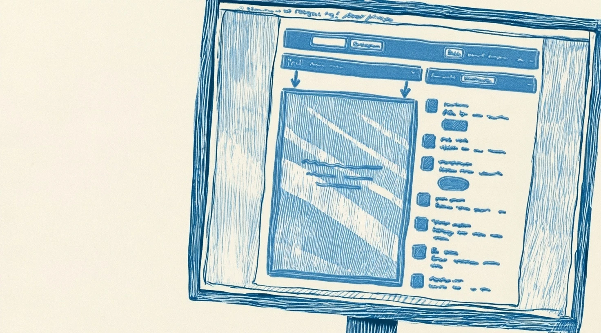

The prototype drawing never moves or fades. Only what's around it changes: napkin and pen fade out, monitor fades in.


The yellow block from "Dropped" sweeps across; behind it, napkin becomes screen.
The screen opens from the sketch's centre outward with a soft flash, as if the drawing powers up.